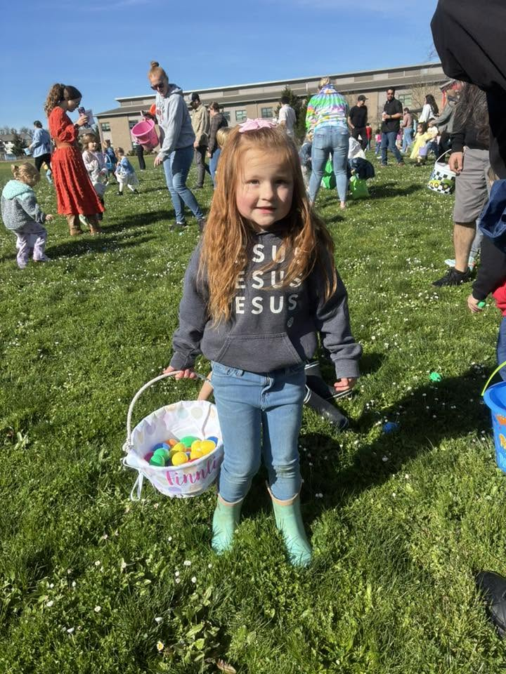

Youth
A safe, engaging place where children can know Jesus and grow in God’s Word.

Life together
God designed us to follow Jesus together and use our gifts to build up the church and bless our city.
Find your place
Our ministries help people know Jesus, grow in His Word, build real relationships, and serve others.
A safe, engaging place where children can know Jesus and grow in God’s Word.
Friendship, biblical truth, and encouragement for young people learning to follow Jesus.
Bible study, prayer, fellowship, and opportunities to grow together in Christ.
Encouragement, discipleship, and practical opportunities to grow and serve together.
Training in Bible study, prayer, worship, leadership, and ministry.
Serve families, care for our community, and share the hope of Jesus throughout Albany.
See current groups, registrations, and opportunities through Church Center.
Explore Church Center ↗